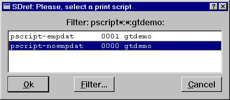
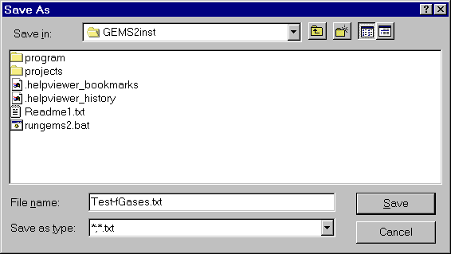
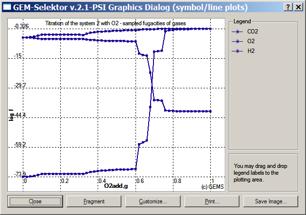
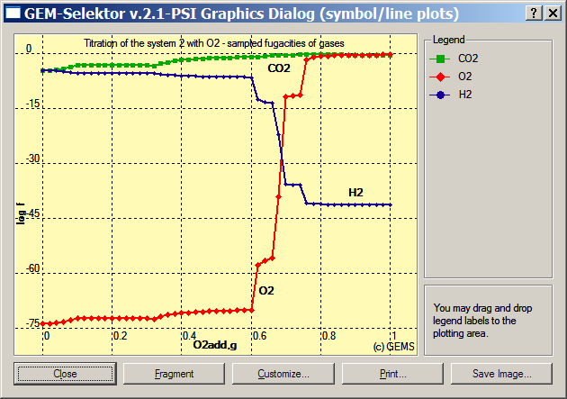

Previous Page Back to Start Page
(27) How
to
run the GtDemo sampler and to plot results.
Switch to
Page
2 of the GtDemo window and press the "Calculate record data"  toolbar
button, then confirm saving the GtDemo record to database.
The sampling begins and you should see how zeros in the y0 table get
repaced
by sampled numbers.
toolbar
button, then confirm saving the GtDemo record to database.
The sampling begins and you should see how zeros in the y0 table get
repaced
by sampled numbers.
The table of
sampled
data can be easily printed (exported) into a text (ASCII) file for the
subsequent
importing and plotting in commercial programs (Excel, Grapher,
SigmaPlot,
Origin etc.). Just click on a "Print data to ASCII file" toolbar
button.
Confirm saving the GtDemo record to database and you will see a list of
available
printing scripts:

Select the second one, as shown above, and press "Ok". The program will display a standard "Save As" dialog, where you will have to select a folder and provide a file name to save the data, as shown below. Press "Save" button to complete the operation.

Note that in
the
same way, you can save contents of any record type (e.g. Process) in
GEM-Selektor.
If necessary, you can create your own printing scripts, save them in
the
project database, and use instead of the default scripts.
Now, press the "Plot data
on
graph dialog"  toolbar button. You will see a "raw" graph as shown below.
toolbar button. You will see a "raw" graph as shown below.

Press
on
the "Customize..." button and set colors and symbols on lines, adjust
the background color, then drag
and drop legend names to obtain plot similar to the one shown below.

As seen on the graph above, there are at least three redox transitions in the system, between additions of 0.6 and 0.78 g O2.
To see what causes these abrupt transitions indicated by fugacity changes of many orders of magnitude, we have to plot the presence of relevant solid phases.
The easiest
way
to do it is to "clone" and modify the available GtDemo record.